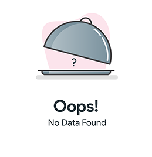
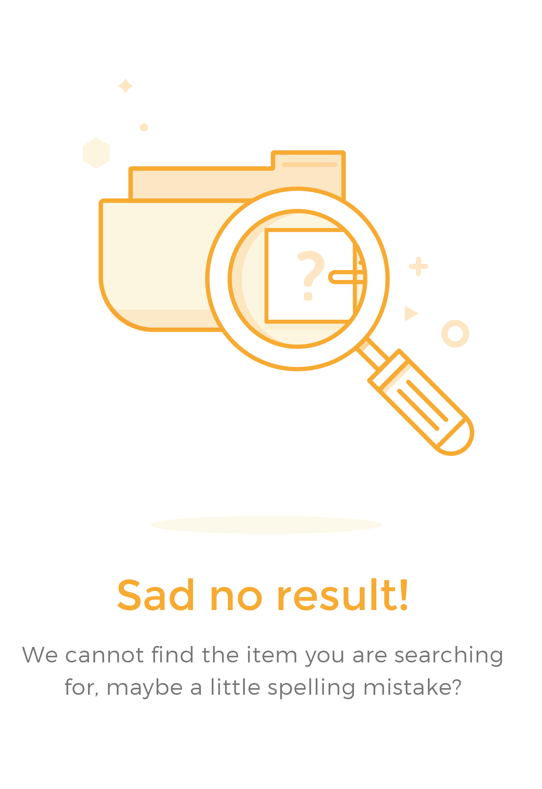

<div class="container">
  <div class="row">

    
    <div class="col-md-6 col-6 ">
      <br>
      <!--Search Component-->
      <label for="username" class="h4">Search Username
        <i class="fab fa-github"></i>
      </label>
      <br>
      <input type="text" autofocus class="form-control" [(ngModel)]='userName' (keyup.enter)='getRepos()' placeholder="Enter Github Username...."><br>
      <input type="submit" value="Search" class="btn btn-success" (click)='getRepos()'>

      <br>
      <br>
      <!-- Repositories Bucket -->
      <div class="container-fluid p-3" [class.bg-light]="reposData.length > 0">
        <div class="row">
          <div class="col">
            <h4>Picked Repositories Bucket</h4>
            <ul class="list-group" *ngIf='reposData.length > 0; else empty'>
              <li *ngFor="let repo of reposData;  let i = index" class="list-group-item">
                <div class="contanier-fluid">
                  <div class="row">
                    <div class="col-9">
                      <h1 class="h5"><a href="{{repo.user_url}}" target="_blank" class="text-body">
                          <i class="fas fa-user-circle"></i> {{repo.user}}</a>
                      </h1>
                      <h6>{{repo.name}}</h6>
                      <span class="badge badge-warning">{{repo.language}}</span>
                        &nbsp;
                        <span class="badge badge-warning">Fork : {{repo.forks_count}}</span>
                        &nbsp;
                        <span class="badge badge-warning"><i class="fas fa-star"></i> {{repo.stargazers_count}}</span>
                      <a href="{{repo.html_url}}" target="_blank" class="">{{repo.html_url}}</a>
                    </div>
                    <div class="col-3">
                      <button type="button" class="btn btn-danger" (click)='removeRepos(i)'>Remove</button>
                    </div>
                  </div>
                </div>
              </li>
            </ul>
          </div>
        </div>
      </div>

      <ng-template #empty>
        
      </ng-template>
    </div>

    <!-- Profile Data-->
    <div class="col-md-6 col-6" *ngIf='responseStatus == 200; else userNotFound'>
      <br>
      <!--User Profile Data-->
      <div class="container-fluid bg-light">
        <div class="row">
          <div class="col-3 p-2">
            
          </div>
          <div class="col-9 p-3">
            <h4>{{profileData.name}}</h4>
            <a href="{{profileData.html_url}}" target="_blank" class="text-secondary"><i class="fas fa-user-circle"></i><u> {{profileData.login}}</u> </a>
            <p class="text-secondary"><i class="fas fa-map-marker-alt"></i> {{profileData.location}}</p>
          </div>
        </div>
      </div>
      <br>

      <!-- User All Repositories -->
      <div class="container-fluid bg-light">
        <div class="row">
          <div class="col">
            <h4 *ngIf="repos.length > 0" class="p-2">All Repositories</h4>
            <ul class="list-group">
              <li *ngFor="let repo of repos;" class="list-group-item">
                <div class="contanier">
                  <div class="row">
                    <div class="col-10">
                      <h6>{{repo.name}}</h6>
                      <span class="badge badge-warning">{{repo.language}}</span>
                        &nbsp;
                        <span class="badge badge-warning">Fork : {{repo.forks_count}}</span>
                        &nbsp;
                        <span class="badge badge-warning"><i class="fas fa-star"></i> {{repo.stargazers_count}}</span>
                      <a href="{{repo.html_url}}" target="_blank">{{repo.html_url}}</a>
                    </div>
                    <div class="col-2">
                      <button type="button" class="btn btn-primary" 
                      (click)='addRepos(repo.name, repo.html_url, repo.language, repo.forks_count, repo.stargazers_count, profileData.html_url, profileData.login)'>Pick</button>
                    </div>
                  </div>
                </div>
              </li>
            </ul>
          </div>
        </div>
      </div>
    </div>
    <ng-template #userNotFound>
      <div class="col-md-6 col-6 vhl p-2">
          
      </div>
      
    </ng-template>
  </div>
</div>